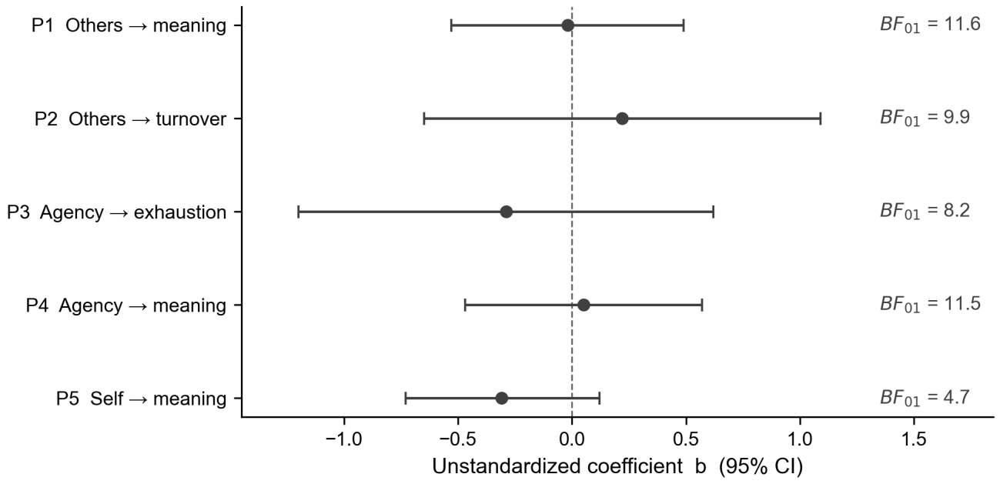
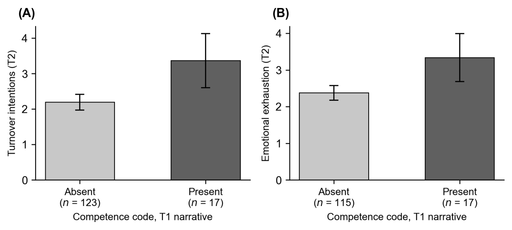
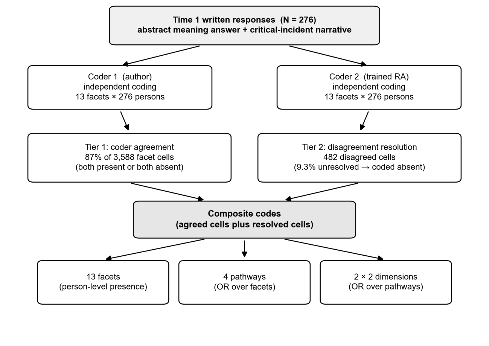
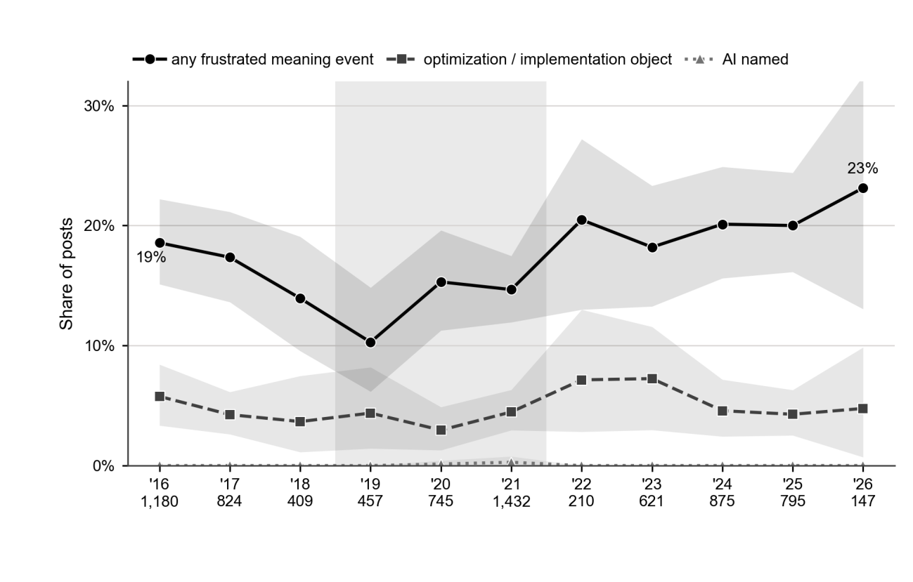

← Publication page · mjmonnot.github.io
Meaningful work and automation in helping professions · Research companion
Among helping-profession workers, the six planned links between the meaning in their work stories and their outcomes a year later came out near zero.
Study 1 asked 307 helping-profession workers, recruited online in March 2016, to write about the work episodes they found most meaningful, and followed 144 of them about a year later. Two human coders sorted each story into kinds of meaning. The paper then tested whether those kinds forecast felt meaningfulness, emotional exhaustion and turnover intentions at the second survey. Studies 2 and 3 coded 7,695 nurses’ forum posts captured from 2016 to 2026 with one language model. No study measured any worker’s own exposure to AI.
Three findings
- All six planned predictions, from the kinds of meaning in workers’ stories to how they fared a year later, came out near zero.
- One of four unplanned results that survived screening was that stories that grounded meaning in competence or mastery were associated with higher turnover intentions and emotional exhaustion a year later. It rests on 17 coded stories.
- In 7,695 nurses’ forum posts captured from 2016 to 2026, a named AI system was the object of 7 of 5,429 coded meaning events. About one post in twenty named an optimization practice or a system rollout, such as staffing ratios or documentation load.
At a glance
What this means in practice
The decision
Helping professions are adopting AI to automate documentation, monitoring and coordination, on the premise that offloading routine tasks frees workers for meaningful care. The paper notes that this premise assumes managers already know which tasks are routine and which are meaningful.
Screen a planned deployment for what it does to the task and to workers’ discretion over how the work is done. The paper states that this screen is consistent with the pattern in nurses’ posts, where the objects named were optimization practices, such as staffing ratios or documentation load, and system implementations or rollouts. Where automation removes work that people do not find meaningful, the paper states that the efficiency case is intact. Its forum results are same-post co-occurrences in a self-selected venue, so the paper draws implications for measurement and does not test any intervention.
What was found
- The six planned predictions came out near zero. The three coded dimensions added ΔR² = .012 to later felt meaningfulness (p = .534; 136 workers).
- In the Time 1 survey wave, the codes did track self-reported meaningfulness (others-directed meaning r = .24; agency r = .20; 272 workers).
- Stories grounded in competence or mastery were associated with higher turnover intentions (b = 1.40, 95% CI [0.58, 2.22]) and emotional exhaustion (b = 0.95, 95% CI [0.20, 1.70]) a year later.
What to watch, as named in the paper
- What a deployment does to the task. The paper’s forum codes record what became of the task involved: taken, added, reconfigured or unchanged.
- Where to look in workplace text. The paper states that exposure to algorithmic management in occupational text must be sought through the artefacts and practices themselves; AI vocabulary appeared in under 1% of nurses’ posts in any year (pages 44 and 50).
- Meaning still in use. Competence and relational connection were still being enacted in nurses’ posts, and the paper states that deployments that displace skill or compress patient contact would act on those parts of the job.
What would sharpen the answer
- A designed study that tries to falsify the competence result.
- A within-account design over the 1,494 forum accounts with two or more posts, using posted dates.
- An independent coding panel judged against later well-being and retention.
The cards follow the paper’s Results (including p. 44), Discussion (p. 48 to p. 52), Practical Implications, Strengths and Limitations, and Conclusion (p. 54). To discuss a deployment review: matt@vocentive.com.
For writers and editors
Among helping-profession workers, the six planned links between the meaning in their work stories and their outcomes a year later came out near zero.
- Paper
- “The AI Paradox: How Optimization May Undermine Meaningful Work in Helping Professions,” by Matthew J. Monnot (Vocentive) and Isaac Thompson (Amazon).
- Kind of study
- Three studies. Study 1 is a two-wave panel built on critical-incident narratives. Study 2 coded nurses’ forum posts for meaning events with one language model. Study 3 compared those codes between capture periods.
- Status
- Preprint posted on PsyArXiv (2026), doi.org/10.31234/osf.io/jzngq_v1.
- Data
- Study 1: 307 helping-profession workers recruited through Amazon Mechanical Turk (Time 1, March 10 to 16, 2016) and 144 longitudinal cases at Time 2 (February 14 to March 30, 2017), roughly 55% in health care. Studies 2 and 3: Internet Archive snapshots of allnurses.com captured from 1 January 2016 to 8 September 2026. No narrative or post text is shown on this page.
- What was studied
- Whether the kinds of meaning in workers’ stories forecast felt meaningfulness, emotional exhaustion and turnover intentions about a year later, and what nurses name when meaning is frustrated in their posts.
- AI use
- The preprint carries no statement on AI use in preparing the manuscript. It reports language models as research instruments: claude-sonnet-5 in the Study 1 coding test and as the single Study 2 coder, and gpt-5-2025-08-07 in a single non-voting pass used only for salience reliability on the development cases. On a 65-case test subsplit, gpt-5 ran non-voting and completed 65 cases under the decision-first prompt but 22 of 65 under the per-facet prompt, so its per-facet pass is incomplete and is not tabled.
The study supports
- “In this panel, the kinds of meaning in workers’ stories did not clearly forecast their outcomes a year later.”No interval excluded zero in the predicted direction; for the three-dimension block, ΔR² = .012 and the Bayes factor favoring the null was 481.5 (Tables 2 and 3).
- “Stories grounded in competence or mastery were associated with higher turnover intentions a year later.”Exploratory: b = 1.40, 95% CI [0.58, 2.22], 100 workers, against stories without the competence code; 17 of 140 matched stories carried the code (Table 4).
- “Nurses’ forum posts rarely named an AI system.”7 of 5,429 coded meaning events in 7,695 posts captured 2016 to 2026, none in the 2023 to 2026 window (pages 44 and 49).
It does not support
- “AI is eroding meaning at work.”The paper states that it does not claim this from its data. No study measured any worker’s exposure to AI (pages 2 and 50).
- “Frustration in nurses’ posts rose over the decade.”The paper reports a rise in the lack-of-control flag with a site template change attached, and states that it does not describe rising frustration (page 47).
- “Talk of staffing ratios and metrics leads nurses to quit.”Quit-intent flags and optimization talk were coded together within single posts by one model. The paper states this is not a temporal ordering, and 85% of posts naming an optimization object carried no quit flag (page 45).
- “A language model can stand in for human coders on this scheme.”None of the six prompt setups met the agency standard. The paper treats this as a result about this codebook and prompt set and does not treat it as a ceiling on machine coding (pages 26 and 52).
Monnot, M. J., & Thompson, I. (2026). The AI paradox: How optimization may undermine meaningful work in helping professions [Preprint]. PsyArXiv. https://doi.org/10.31234/osf.io/jzngq_v1
Questions, or a quote: Matthew J. Monnot, matt@vocentive.com.
1 · The six planned predictions came out near zero
Each planned prediction tied one coded kind of meaning in a worker’s Time 1 story to one Time 2 outcome. Every model was an ordinary least squares regression with HC3 standard errors, adjusted for age, work centrality, occupation block and, for felt meaningfulness, its Time 1 level. A coefficient near zero means the coded meaning carried little information about the later outcome. Pick a prediction.
The sixth planned test asked whether the three coded dimensions together added to Time 1 self-reported meaning in forecasting felt meaningfulness. They added ΔR² = .012 (robust Wald F(3, 126) = 0.73, p = .534; 136 workers), and the Bayes factor favoring the null was 481.5. After the primary tests, the authors added equivalence tests (two one-sided tests) and Bayes factors, with interpretation criteria fixed before the numbers were computed. With all three dimensions entered together, the test against a band of ±.30 in standardized units was significant for three of the five coefficients (P1, P4 and P5), and the test against ±.20 was significant for none. Two further planned questions could not be tested: only 16 workers carried both agency and communion, and only 4 of 276 narrated three or more pathways.

Select the figure to enlarge it.
2 · One of four unplanned results that survived screening: stories grounded in competence were associated with higher strain a year later
The paper screened about 1,700 unplanned associations with Benjamini-Hochberg control at q = .10, and four survived. The first concerns workers whose Time 1 story grounded meaning in competence or mastery, compared with workers whose story did not carry that code. Neither outcome was measured at Time 1. Pick an outcome.
The competence code was present in 17 of 140 matched stories (12 coded present by both coders and 5 settled in the disagreement pass). The association held under the composite codes and under the second coder’s codes (r = .26), and it did not hold under the first coder’s unfiltered codes (r = .02). Its sign matched in all 200 random split-half re-estimates. The code records that competence appeared as a source of meaning; it does not tell satisfied competence from frustrated competence. The paper calls it a candidate effect awaiting a designed test. The other three screened results are listed in section 6.

Select the figure to enlarge it.
3 · No language-model prompt setup met the human-agreement standard for agency, so humans coded every predictor
Before any substantive analysis, the authors tested whether a language model could stand in for the two human coders. Six prompt setups were fixed by hash and scored once on a 55-case development partition with claude-sonnet-5, run three times each. Agreement is the proportion of specific agreement with the human composite codes. A setup was accepted only if it reached the lower end of the human pair’s own 95% interval. Pick a dimension.
Human agreement was itself low for communion (.48, 95% CI [.34, .60]) and self-directed meaning (.52, 95% CI [.43, .59]), so those dimensions carried no acceptance standard, and communion was left out of the planned tests. Later, under a hashed protocol, the two highest-ranked setups were scored once on a prespecified 65-case subsplit of the held-out cases. Agency agreement was .81 and .80; the screen for scoring the remaining 128 cases was not met, and the paper does not report a separately authorized pass over them. Because the human codes were used, the design-based supervised learning correction that the authors had specified for machine labels was not applied.

Select the figure to enlarge it.
4 · Nurses’ posts named an AI system in 7 of 5,429 coded meaning events
Study 2 coded 7,695 allnurses.com posts of at least 200 characters, captured by the Internet Archive from 2016 to 2026, with one pass of one language model (claude-sonnet-5). No forum post was coded by a person, so every rate is a rate of model-assigned codes. Study 3 compared the 2023 to 2026 capture window with 2016 to 2019, using thread-clustered intervals and permutation tests as descriptive screens. Pick a post-level code.
The model coded 629 events with a named object. Of these, 73% concerned an optimization practice and 26% a system implementation or rollout. Nearly half (49%) targeted the facet the paper calls Control/Autonomy. Attribution went to management in 51% of object events, to staffing in 22% and to the tool itself in 13%. Competence was the most frequently enacted facet in every capture period. The site moved to new forum software between 2019 and 2021, which shortened posts and reduced codable events; the paper states that this change conditions every trend statement in Study 3.

Select the figure to enlarge it.
5 · What the paradox claim rests on
The paper’s title claim is an argument built by placing its own results beside published work on which tasks are being automated. None of its studies measured AI exposure.
The paper locates the risk of optimization in the tasks that workers name as meaningful.
The paper names the relevant exposure in nursing as the manner in which a system arrives, for example as a metric or a management mandate. In nurses’ posts, the objects named were optimization practices, such as staffing ratios or documentation load, and system implementations or rollouts; a named AI system was the object in 7 of 5,429 events.
How to read this. The Time 1 stories were written in March 2016, before public release of contemporary generative-AI systems, so the paper reads the paradox by juxtaposition. It lists boundary conditions: a task that is meaningful for one worker may be routine for another, and where automation removes work of low meaning, the efficiency case is intact. Capture year on the forum is a proxy for posting year, and the posters chose to post on one professional forum.
6 · What the study found, in order
- Planned predictions (Study 1). All five planned coefficients had 95% intervals that included zero, and none excluded zero in the predicted direction; the three-dimension block added ΔR² = .012 to later felt meaningfulness (p = .534), with a Bayes factor of 481.5 favoring the null.
- Two planned questions that could not be tested. Only 16 workers carried both agency and communion, so the interaction was not estimable. Only 4 of 276 narrated three or more pathways, so the curvilinear density tests had no interior turning point (page 33).
- Same-wave convergence. In 272 coded workers, others-directed meaning correlated r = .24 with Time 1 self-reported meaningfulness, and agency r = .20; the coded dimensions together accounted for ΔR² = .08.
- Competence and later strain (exploratory). Turnover intentions b = 1.40, 95% CI [0.58, 2.22]; emotional exhaustion b = 0.95, 95% CI [0.20, 1.70]; standardized β = .29 and .30 with six Time 1 survey measures and age entered jointly.
- Espoused but not narrated meaning (exploratory). Meaning claimed in the abstract answer but absent from the story was associated with higher Time 2 turnover intentions (b = 0.80, 95% CI [0.27, 1.33]). Coder disagreement was higher when concurrent meaningfulness was lower (b = −0.21, p = .004).
- Language-model coding. Agency agreement .750 to .798 for the six prompt setups against a standard of .910.
- Forum posts (Study 2). 5,429 coded meaning events in 7,695 posts; a named AI system was the object in 7; about one post in twenty carried an optimization or implementation object in each capture period.
- Change over the decade (Study 3). The share of posts with such an object went from 4.8% to 5.2% (0.4 points, 95% CI [−1.8, 2.5]). The lack-of-control flag went from 10.5% to 14.5% (4.0 points, 95% CI [1.2, 6.7]), the one post-level contrast that survived screening, reported with the template-change caveat.
For specialists
The study design and the main reported estimates in one place. Sources are the preprint’s Method and Results sections, Tables 1 to 4, Tables S1 to S3 and Figures 3 to 5 and S3.
| Study 1 design | Two-wave critical-incident panel; Amazon Mechanical Turk. Time 1 March 10 to 16, 2016 (N = 307); Time 2 February 14 to March 30, 2017 (144 longitudinal cases); wave interval 11.1 to 12.6 months (M = 11.58). Completers older than noncompleters (d = 0.43) and higher in work centrality (d = 0.25). Roughly 55% health care. |
|---|---|
| Measures | Time 1: three-part critical-incident narratives (context, event, outcome) and an abstract job-meaning answer; WAMI (α = .92); SWB-M; work centrality (1 item). Time 2: SWB-M meaningfulness (Hypothesis 1d outcome); WAMI (α = .93); MBI emotional exhaustion; eight-item turnover intention composite (not given at Time 1). |
| Coding | 13 binary facets adapted from Rosso et al. (2010), rolled up by logical OR to four pathways and the 2 × 2 dimensions. Two coders plus a blinded resolution pass by the first author; 9.3% of cells unresolved and coded absent. Dimension prevalence: agency 64%, others 56%, self 23%, communion 11%. Human PSA: agency .935 [.910, .956]; others .844 [.805, .879]; self .52; communion .48. |
| Planned tests | Table 2. OLS, HC3 standard errors; covariates age, work centrality, occupation block, plus the Time 1 baseline in the meaningfulness models; directional tests one-tailed at α = .05. P1 Others → felt meaningfulness b = −0.02 [−0.53, 0.49]; P2 Others → turnover 0.22 [−0.65, 1.09]; P3 Agency → exhaustion −0.29 [−1.20, 0.62] (n = 128); P4 Agency → felt meaningfulness 0.05 [−0.47, 0.57]; P5 Self → felt meaningfulness −0.31 [−0.73, 0.12]; P6 block ΔR² = .012, F(3, 126) = 0.73, p = .534 (full-model R² = .35). Power: |r| ≥ .23 at 80% with 144 cases. |
| Equivalence and Bayes | Table 3 (post hoc; criteria fixed before computation). TOST at ±.20: p = .055 to .328, none significant; at ±.30: P1 .008, P4 .008, P5 .017, P2 .086, P3 .164. BF01 4.7 to 11.6 per dimension; 481.5 for the block. With each dimension entered alone, the equivalence test was significant at ±.20 for four predictions and at ±.30 for all five; agency and others co-occur (φ = .71). |
| Robustness of the nulls | High-confidence (n = 67) and flag-excluded (n = 101) re-estimates kept intervals covering zero. Recoding unresolved cells as present: block ΔR² = .003. Huber re-estimation reproduced all five coefficients. |
| Screening | About 1,700 unplanned tests, Benjamini-Hochberg q = .10 within family; four survived. No moderation (249 tests) and no job-satisfaction, affective well-being or work-life association (0 of 35) survived. Six of 13 facets occurred in five or fewer of 276 stories and could not be tested. |
| Competence result | Table 4. Adjusted OLS (age, work centrality, occupation block; HC3): turnover b = 1.40 [0.58, 2.22], n = 100; exhaustion b = 0.95 [0.20, 1.70], n = 94. Ordered logit (5 bins): OR = 5.47 [1.94, 15.42], n = 136. Unadjusted r = .28 [.12, .43] (n = 140) and .28 [.11, .43] (n = 132). Full Time 1 survey battery plus age: β = .29 [.04, .54] and .30 [.06, .55]. Code present in 17 of 140 matched cases. Implied latent biserial .44 to .46 under a normal liability model, labeled illustrative (Figure S8). |
| Language-model test | Table S1. Primary model claude-sonnet-5, run 2026-09-22, three runs per setup, provider default temperature; gpt-5-2025-08-07 ran a single non-voting pass used only for salience reliability on the 55-case development partition (p. 26). On the 65-case test subsplit, gpt-5 ran non-voting and completed 65 cases under the decision-first prompt but 22 of 65 under the per-facet prompt, so its per-facet pass is incomplete and is not tabled (Table S2). Development partition, case-cluster bootstrap (B = 10,000). Agency PSA .750 to .798 (standard ≥ .910); others-directed .761 to .819 (standard ≥ .805; met by two decision-first setups). Disqualifiers: any false positive on communion facets or on sparse facets over cells both human coders had coded absent, and a structured-output error rate above .10. Test subsplit (Table S2, 65 cases): agency .81 and .80; others-directed .746 and .77; the screen for scoring the remaining 128 cases (both ≥ .75) was not met. |
| Study 2 corpus | Internet Archive snapshots of allnurses.com, 1 January 2016 to 8 September 2026 (2026 partial, 147 posts): 7,695 posts of at least 200 characters, 1,453 threads, 4,442 hashed accounts. Capture windows 2016 to 2019, 2020 to 2022 and 2023 to 2026. Thread-resampling bootstrap (B = 2,000). |
| Study 2 instrument | claude-sonnet-5, one pass at the API default temperature (the protocol’s temperature lock was not applied; recorded as a deviation); prompt frozen and hashed. Events carry facet, polarity (enacted, frustrated or wished for), object, stance, task outcome, emotion and attribution; four post-level flags. No human coding of posts; no second-model, perturbation or negative-control check. |
| Study 2 results | 5,429 events (0.71 per post); 66% of posts with no event. Named AI 7 events, all in 2020 to 2021 captures. 629 object events: 73% optimization practice, 26% implementation; 49% Control/Autonomy, 21% Competence; 74% frustrated. Quit-intent in object posts 13.8%, 14.9% and 15.9% against 1.6%, 1.7% and 1.9% in other posts; among the 1,317 posts with a frustrated event, pooled difference 7.5 points [1.9, 12.9], and did not exclude zero within any single period (p. 45). Reverse conditional: 30% of quit-flagged posts named an object [21, 39]. |
| Study 3 contrasts | Table S3, 2023 to 2026 against 2016 to 2019; permutation tests (B = 4,000), Benjamini-Hochberg within family; descriptive screens. Object share 4.8% to 5.2%, 0.4 [−1.8, 2.5], q = .971; lack-of-control 10.5% to 14.5%, 4.0 [1.2, 6.7], q = .028; any frustrated event 16.2% to 19.8%, 3.5 [0.2, 6.6], q = .138; quit-intent 2.2% to 2.7%, 0.4 [−0.9, 1.8], q = .971. Frustrated Control/Autonomy 9.6 to 12.7 per 100 posts, 3.1 [0.5, 6.0], q = .272. |
| Limits | Time 1 data predate the automation wave; online panel, majority health care. Forum codes from one model applied once, with an unknown false-present rate on forum prose. Template change in 2019 to 2021. Capture period is not posting period. Badge coverage depends on template. Within-account design over 1,494 accounts not run. |
| Materials | Analyses in Python (pandas, statsmodels, SciPy). Narratives, post text and model instructions are not hosted on this page. |
What this site does and does not show
- No respondent narrative, forum post text or model instruction is hosted here. Every estimate and interval on this page is a published aggregate from the preprint. Nothing is estimated in the browser.
- No estimate from the 128 held-out cases is shown; the preprint does not report one.
- No deployment or intervention is evaluated. The paper draws measurement implications and tests no intervention.
Earlier companion pages
Earlier companion pages for this paper are no longer linked from this page.
Tools used
Analyses: Python (pandas, statsmodels, SciPy), as reported in the preprint. Language-model coding: claude-sonnet-5, with gpt-5-2025-08-07 in a single non-voting pass used only for salience reliability on the development cases. On a 65-case test subsplit, gpt-5 ran non-voting and completed 65 cases under the decision-first prompt but 22 of 65 under the per-facet prompt, so its per-facet pass is incomplete and is not tabled.